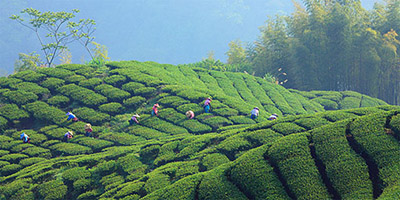

茶叶，指茶树的叶子和芽
茶叶，指茶树的叶子和芽。[1] 别名茶、槚（jiǎ），茗，荈（chuǎn）。泛指可用于泡茶的常绿灌木茶树的叶子，以及用这些叶子泡制的饮料，后来引申为所有用植物花、叶、种子、根泡制的草本茶，如“菊花茶”等；用各种药材泡制的“凉茶”等，在中国文学中亦称雷芽。有些国家亦有以水果及香草等其它植物叶而泡出的茶，如“水果茶”。[2]  茶叶源于中国，茶叶最早是被作为祭品使用的。但从春秋后期就被人们作为菜食，在西汉中期发展为药用，西汉后期才发展为宫廷高级饮料，普及民间作为普通饮料那是西晋以后的事。发现最早人工种植茶叶的遗迹在浙江余姚的田螺山遗址，已有6000多年的历史。饮茶始于中国。叶革质，长圆形或椭圆形，可以用开水直接泡饮，依据品种和制作方式以及产品外形分成六大类。依据季节采制可分为春茶、夏茶、秋茶、冬茶。以各种毛茶或精制茶叶再加工形成再加茶，包括分为花茶、紧压茶、萃取茶、药用保健茶、含茶饮料等。 茶叶中含有儿茶素、胆甾烯酮、咖啡碱、肌醇、叶酸、泛酸等成分，可以增进人体健康。茶叶饮品-茶被誉为"世界三大饮料之一"。